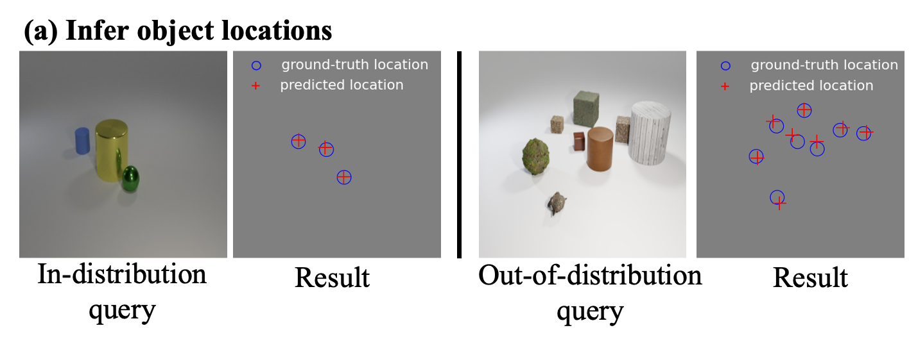
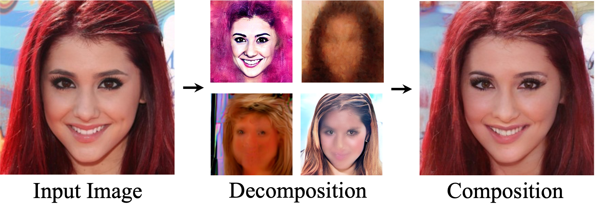
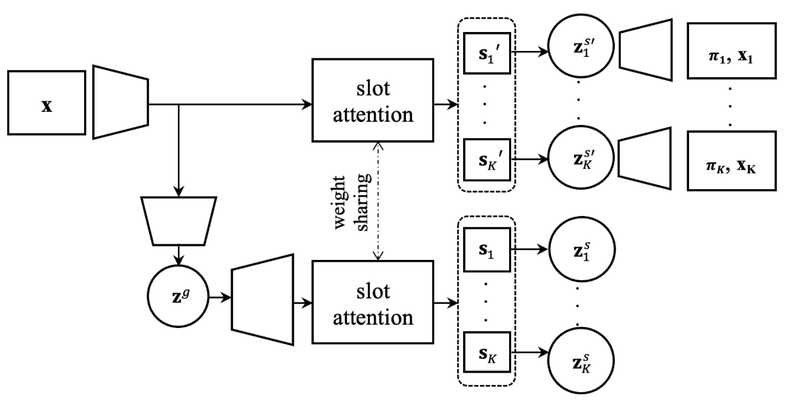

|
Yanbo Wang I'm a PhD Candidate at TU Delft in the Netherlands, supervised by Prof. Justin Dauwels and Prof. Geert Leus. I received my master's degree from George Mason University in the U.S., honored with Outstanding Academic Achievement Award. I was a Best Student Paper Finalist at Asilomar 2020. |

|
ResearchI am interested in generative models, object-centric learning, and compositional modeling, with focus on generalization to novel settings beyond training data. The applications include visual content generation, scene understanding, physical reasoning, and robotic manipulation. |
News
|
Selected Publications (* stands for equal contribution) |
|  |
Compositional Scene Understanding through Inverse Generative Modeling
Yanbo Wang, Justin Dauwels, Yilun Du ICML, 2025 Website / Paper / Code |
|  |
Compositional Image Decomposition with Diffusion Models
Jocelin Su*, Nan Liu*, Yanbo Wang*, Joshua B. Tenenbaum, Yilun Du ICML, 2024 Website / Paper / Code |
|  |
Slot-VAE: Object-Centric Compositional Image Generation with Slot Attention
Yanbo Wang, Letao Liu, Justin Dauwels, ICML, 2023 Website / Paper / Code |
Miscellanea |
Research Talks |
Compositional Inference for Generalizing beyond Training Distribution, SPS Seminar, TU Delft, 2025.
|
Academic Service |
Reviewer, ICLR 2025
Reviewer, ICML 2025 Reviewer, NeurIPS 2025 |
Teaching Experience |
Co-instructor, EE4685 Machine Learning, a Bayesian Perspective (Graduate), 2023-2024
Co-instructor, EE4C12 Machine Learning for Electrical Engineering (Graduate), 2022-2024 |
|
This webpage template is forked from source code. |